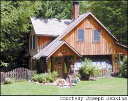
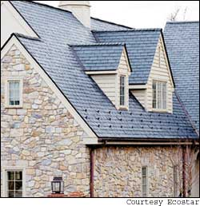
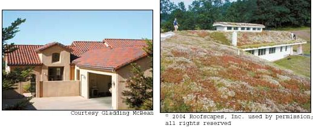
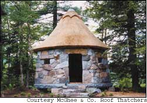
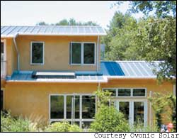
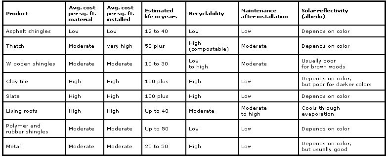

Issue # 208 - February/March 2005
Builders have always said “a good hat and good shoes” are essential to protect a house from any type of weather. Even so, home builders opt to install the cheapest, shortest-lived shingles on four out of five new homes built in the United States today.
“‘First cost’ is the overriding issue in most home building,” says Alex Wilson, executive editor of BuildingGreen, publishers of Environmental Building News and Green Building Products. “Builders are trying to get the most house for the least money. And most homeowners have bought into the idea that they should build or buy the largest house they can afford.oing so means they cut corners on the material’s durability and performance.”
Incorporating green building materials into your home makes much more sense when you take a long-term view of home building and its life cycle costs. Only then is it apparent that building with better roofing materials is in your best interest. And now, eco-friendlier roofs are more attractive, affordable, durable and readily available than ever.
Not all roofing material is created equal. Each has attributes that best suit certain structures and environments. Choosing the right product for your home involves a careful analysis of such factors as durability, solar reflectivity, cost and ecological impact. If you have considered re-roofing your home or are planning to build a new house, weigh these criteria before selecting a roof material.
First, consider the roof’s durability: How long will it last? Some asphalt shingles are inexpensive to buy, but they have half (or less) the life expectancy of many other roofing materials. But higher-quality asphalt shingles can be a viable option if properly chosen, says Clarke Snell in his book, The Good House Book: A Common-Sense Guide to Alternative Homebuilding. “Poor quality asphalt shingles ... are the Styrofoam cup of the building industry, [but] high-quality asphalt shingles are much cheaper than metal, easy for one person to install, accommodate roof punctures such as chimneys and skylights with relative ease, and can last 30 to 40 years or more.” The moral here is that even the same product type can have a wide range of quality, so be sure you know what you’re getting before you buy.
Another consideration when choosing a new roof is the material’s solar reflectivity, known as the albedo. If you are planning to retrofit an older home with a greener roof, its albedo may be a greater concern than a newer house with efficient insulation. Use of lighter colored, low solar-absorbent roofing surfaces is one of the key measures advocated in the “Cooling Our Communities” program of the U.S. Environmental Protection Agency (EPA).
Studies conducted by the Florida Solar Energy Center compared the performance of roofing materials. Asphalt shingles had a solar reflectance ranging from 3 percent (onyx black shingles) to 31 percent (“white” shingles). Brown wood shingles were found to have a solar reflectance of about 22 percent, and a brownish-orange terra-cotta cement tile had about a 24-percent solar reflectance. In contrast, white and light-colored metal roofing had reflectances ranging from 50 percent to 66 percent.
Improving the albedo of your roofing surface can cut cooling costs by up to 50 percent, depending on how much insulation is in your ceiling or roof. And, while you save on cooling costs, you’ll also prolong the life of your shingles. According to www.energystar.gov, roofs with high solar reflectivity maintain a more even core temperature, which protects against the shingles’ deterioration.
“Cooling-load avoidance can be important in some situations,” Wilson says. “But if a house is properly insulated to at least R-24 [the higher the R-value, the lower the heat flow] in the ceiling or roof, the heat gain or heat loss through solar energy absorption on the roof surface is really pretty minor. With the insulation levels recommended in a green home, albedo is not a significant consideration.”
According to the Asphalt Roofing Manufacturers Association, more than 12.5 billion square feet of asphalt shingle products are made each year - enough to cover more than 5 million homes annually.
The attraction to asphalt shingles is they are affordable and lightweight - no additional engineering is needed to put them on your rooftop. Of all the roofing products available, they usually are the least expensive upfront, but proportionately less durable over time.
“It’s a hard sell to push homeowners to longer-lasting alternatives because those alternatives are usually a lot more expensive, and the homeowner probably doesn’t expect to stay in a house for more than 20 years,” Wilson says.
“Asphalt is a bad roofing option from an environmental standpoint,” Wilson adds. “In addition to all the resources going into making such a short-lived product, there is a tremendous amount of solid waste generated from the removal of old shingles.”
Every year about 11 million tons of asphalt shingles are shucked into landfills, according to www.shinglerecycling.org. In fact, old asphalt shingles constitute about 3 percent of all municipal solid waste. Asphalt shingles can be recycled, but so far the technology to do so is in its infancy, and widespread asphalt shingle recycling is not available.
Asphalt shingles come in two different kinds: organic-based or fiberglass-based. The organic kind are made from materials such as recycled waste paper, wood fibers and felt, then saturated with a specially formulated asphalt coating and surfaced with weather-resistant mineral granules. Organic-based asphalt shingles contain about 40 percent more asphalt per square (100 square feet) than fiberglass, which gives them more weight, durability and blow-off resistance. Fiberglass shingles start with a glass-fiber reinforcing mat that is coated with asphalt and mineral fillers for adhesion, then embedded with ceramic granules. Asphalt shingles come in many different shapes, sizes, thicknesses and grades. If you do choose to use asphalt, make sure to pick the most durable shingle that suits your structure’s needs, usually an organic variety.
Made from abundant raw materials, ceramic-tile roofs are one of the longest-lasting roofing materials available. “Fifty years is nothing for a tile roof,” says roofing restoration expert Joseph Jenkins of Barkeyville, Pa. “Fifty years is a young tile roof.” In fact, tile roofs can easily last for more than 100 years, often outlasting the buildings they protect. Because of this, they often are considered “recyclable roofs” for their ability to be removed and installed on other buildings. Clay tile also is coveted for its high resistance to wind and fire, low maintenance and ease of repair.
Disadvantages include its heavy weight and its high initial cost. Tile roofs can easily cost two to three times more than an asphalt shingle roof, but the initial expense will pay off in many years of hassle-free roofing.
Generally split from Western red cedar, Alaskan yellow cedar and Eastern white cedar logs, wooden shingles are available in a variety of shapes and sizes. They have an estimated life of 25 to 30 years in dry climates, and 10 to 15 years in moist climates. Wooden shingles allow the roof to “breathe” and release water vapor, provided they are laid over a subsurface that allows for air circulation behind the shingle.
While the rustic beauty of wooden shingles is obvious, they do have their drawbacks. “I am not a fan of wooden shingles,” Wilson says. “The raw materials are typically not sustainably produced, and the durability is fairly short, particularly in wet climates.”
Moist climates will promote mold, rot, mildew and fungus growth, and arid climates will result in warping and cracking over time. The initial cost also can be high - twice as much or more as asphalt shingles. Wooden shingles may not be suitable for use in fire-prone areas. Check with your local building code official first.
According to the Center for Resourceful Building Technology, the wooden shingles predominantly found on the market are from old-growth forests. For homesteaders with the ability and the resources, hewing your own wooden shingles from already fallen local timber is a viable alternative.
Slate stone roofs are perhaps the most durable of all roofing materials. They also are strong, available in a color spectrum from sea green to earthy red, and are quite beautiful. Tiles can be made in almost any shape, and they can be installed on roofs in a variety of thicknesses, widths and lengths.
Slate can weigh 6 to 7 pounds per square foot, which may require additional structural support for your home or building. The minimum slope for a slate roof is a ratio of 4:12, Jenkins says, but the best use for slate roofing is for steep slopes. Like clay tile, slate also can last long past the life of the building - making it extremely recyclable - and it is initially more expensive than many other roofing materials, but less expensive when comparing the long-term cost over a roof’s life.
Slate can last almost indefinitely, depending on the type, thickness, fasteners, roof slope and installation, with only minor maintenance. With the right tools and a little know-how, installing or repairing a slate roof is fairly straightforward. Reclaimed slate also is available.
“By recycling a slate roof yourself, you can own a lifetime stone roof for less money than the cheapest of asphalt roofs,” Jenkins says. “If you’re not that industrious, you can buy new or used slates and install them yourself with the proper guidebook and tools.” Professional slate-shingle installation also is widely available.
Living roofs, covered with a dense mat of growing plants, are sprouting up on the tops of commercial and residential buildings in the United States as a way to reduce heating and cooling costs, and to improve local air quality. Urban heat-island effects (the tendency for large asphalt and concrete areas - such as in cities - to build up more heat than the surrounding countryside) also are reduced, as is storm-water runoff. Living roofs can detain more than 50 percent of rainwater from a typical storm, which reduces the loads placed on storm sewers in urban areas, according to Green Building Products.
Also referred to as a “green roof,” a living rooftop usually consists of a waterproof membrane, such as a modified asphalt or synthetic rubber (EPDM), over the roof sheathing. Next, a root barrier and drainage media are placed. On top of the drainage media, 2 to 6 inches of a planting mixture (lightweight aggregate, sand, organics, clay and silt) are laid. This soil structure supports drought-tolerant plants such as succulents, herbs, forbes, grasses and some low groundcovers.
Due to their weight and need for solid structural engineering, living roofs are better suited to new construction, rather than retrofits, although a structural engineer can help you determine the feasibility of your existing building structure for supporting a living roof. Water will add another 10 to 25 pounds per square foot when the living roof is saturated, so this roofing method shouldn’t be taken lightly. Weight requirements (including snow, where applicable) need careful consideration when a suitable roofing structure is designed for holding up all that earth.
Living roofs are now available from a handful of suppliers for either commercial or residential application. The Green Products Directory lists U.S.-based companies that specialize in this area.
One of the problems with living roofs is what to do if they ever spring a leak. Tracing the leak back to its origin can be a time-consuming exercise in frustration, and solving the problem may require some professional consultation and careful excavation.
Thatch roofs, made with the dry, coarse stems of reeds or grain crops, have been commonplace wherever these materials exist for thousands of years.
A common misconception is that thatch absorbs large amounts of water. In fact, in a thatch roofing system water is transferred down the roof from stem to stem until it drops. The steep pitch usually (at a ratio of 12:12) associated with thatch roofs allows for water to be shed at a very fast rate, according to the Building Conservation Directory (www.building conservation.com), a Web site dedicated to the conservation of historic buildings.
Besides being water-resistant, thatch roofs are wind-resistant. And, because of the thousands of air pockets between and within the plant material, thatch also is a good insulator, providing a R-value of about 40.
Fire can be a concern, however, and thatcher Colin McGhee of Staunton, Va., says that to comply with fire codes on public buildings, his company treats its thatch with an odorless, nontoxic fire retardant. “But thatch, as it’s used in roofing applications, is inherently very fire resistant,” McGhee says.
Thatch reed roofs are long-lasting, with life spans estimated between 50 and 100 years, if constructed and maintained properly, McGhee says. “Every 12 years or so, thatch roofs need a brushing and dressing off, and the ornamental ridge replaced. I’ve worked on [thatch] roofs in England that are more than 100 years old and still going strong.”
But at a considerable price per installed square foot, most of us don’t have deep enough pockets to roof our houses with thatch. If you’re entranced with thatch, consider tackling a smaller project such as a garden shed or gazebo. For do-it-yourselfers, McGhee sells inexpensive, “shaggy” thatch mats at less than $5 per square foot.
The rise in popularity of green building has produced a large variety of recycled roofing materials, ranging from rubber shingles to imitation slate tile made from recycled plastic and waste-wood composite. Known as polymer-composite or synthetic roofing, these products have the advantage of being lighter than clay tile or slate. Their inherent flexibility makes them resistant to hail damage, high winds and even occasional foot traffic. Made primarily of synthetic materials, they also resist organisms that promote decay. Most polymer roofing materials carry 40- or 50-year warranties, but also carry a high initial cost, often about $3 per square foot.
Panelshake roofing panels, molded from a mixture of old milk jugs and waste-wood fibers, mimic the look of natural slate and tile roofs. Another composite roofing product, Enviroshake, combines reclaimed materials such as recycled plastic, agricultural flax- and hemp-fiber waste and a little bit of post-consumer recycled tire rubber. Touted as an alternative to traditional cedar shakes, Enviroshakes incorporate UV protection with excellent mold-, mildew- and insect-resistant properties. Once installed, they are almost maintenance-free. By using 60-percent to 70-percent recycled tire rubber, Euroslate moves rubber from the road to your roof. And as an interlocking roofing system, Euroslates offer a similar look to slate.
Although polymer-composite roofing offers some environmental benefits up front, no infrastructure exists currently to support the reclamation and recycling of these materials at the end of their useful lives. Robert Falk, Ph.D., one of the original designers of the product, says he eventually would like to see a buyback system put in place to promote the return of used composite building materials to companies for re-manufacture.
Fiber-cement shingles, made by blending Portland cement with finely ground sawdust (from recycled sources), sand and clay, are another composite product. Known for their durability in warmer climates, they typically carry a 50-year warranty. Unfortunately, fiber-cement shingles absorb water, which may weaken the shingle due to freeze-thaw cycling in cold weather. Some products, however, have coatings or polymer constituents to minimize water absorption.
Metal roofing can be made with up to 25-percent recycled steel from scrapped automobiles. This form of roofing is the lightest medium available, weighing a fraction of slate or clay tiles. Additionally, metal will not rot or crack, is noncombustible and designed to resist hurricane-force winds. Metal roofing also reflects more radiant sunlight than it absorbs, which saves you money on heating and cooling, and it comes in a wide spectrum of materials: steel, stainless steel, aluminum, copper and zinc alloys. Each has different properties that affect durability, price and appearance. Prices range from about $1.80 to $6 a square foot, which may seem expensive, but its long life, minimal maintenance and reduced installation labor makes it proportionately affordable over the long run. It’s lightweight and durable, with a life expectancy of 20 to 50 years, and you can sheet right over an existing roof with it.
Metal roofing does have a few drawbacks. Some types of metal roofing such as aluminum make more noise during rain or a hailstorm and can dent. Long-term issues include paint finishes that can peel, chip, fade or scratch.
The last word in eco-friendlier roofs may be the introduction of photovoltaic (PV) roofing shingles and thin-film laminates that both serve as a protective roof cover and energy powerhouse. When the sun strikes the solar cells embedded in the their matrix, electricity is produced. These types of shingles may even produce power on partly cloudy days. According to the National Renewable Energy Laboratory, solar shingles provide the same durability, flexibility and protection as asphalt shingles. Most are warranted to produce power for at least 20 years.
United Solar Ovonic’s Uni-Solar shingles incorporate directly onto the roofing surface and usually integrate well with conventional asphalt shingles. The company estimates that replacing a 450-square-foot section of conventional shingles with solar shingles can meet a third of a typical household’s annual electricity needs. Atlantis Energy System’s SunSlate PV tiles can be incorporated with tile, shake, metal or asphalt-composite roofs.
Joe Schwartz, CEO of Home Power magazine, says one drawback to solar shingles can be the myriad connections and roof penetrations that the shingles necessitate. And the dark color and high absorbance of solar shingles can actually add to a home’s thermal load. (This can be remedied by insulating the home from the shingles, such as with a radiant barrier.)
United Solar offers a simpler and less costly option with its PV laminates that are bonded directly onto metal roofing. The photovoltaic sections are larger with fewer connections and roof-penetrating drill holes. These panels range in size from 4½ (31 watts) to 18 (136 watts) feet, with wiring either in the ridge cap or the eave soffit. On average, about 180 square feet of roof area with good solar access generates 1 kilowatt of electricity. Go to www.uni-solar.com for more information.
The biggest hurdle for installing PV-shingle or tile systems is their high initial cost. Uni-Solar Model SHR-17 solar roofing shingles, for instance, cost about $135 for every 7-by-1-foot section, not including installation, power inverter, batteries, mounting, fuses and wiring. You’re not only buying a roof, however, you’re also buying energy-producing solar panels.
Additionally, a growing number of states now offer tax and rebate incentives of up to 50 percent of a system’s total cost to help ease the cost of investing in this renewable energy technology. (To find out if you are eligible for any incentive or rebate programs in your area, search the Database of State Energy Incentives at www.dsireusa.org.) Factor this in with the reduced or even nonexistent electricity bills you’ll encounter each year, plus the satisfaction of producing pollution-free electricity, and solar roofing becomes a far more viable roofing option.
For a comprehensive listing of all green roofing materials and company information, we highly recommend Green Building Products, published by BuildingGreen (www.buildinggreen.com).
WOOD SHINGLES
Search for Forest Stewardship Council- and SmartWood- certified products at www.smartwood.org and www.fsc.org.
CLAY TILE AND SLATE
Gladding McBean has more than 125 years of experience making clay roof tile and terra cotta. (800) 776-1133; www.gladdingmcbean.com
To find a clay-tile or slate roofing contractor or sources of new and used clay tile or slate in your area, visit the Directory of Slate Roof Contractors at www.jenkins slate.com.
The Slate Roof Bible, by Joseph Jenkins, gives an in-depth look at slate roofing through the ages, and provides complete instructions for slate-roof installation and repair.
RECYCLED ROOFING PRODUCTS
Polymer-composites: EcoStar, (800) 211-7170; www.ecostarinc.com Euroslate: GEM, (403) 215-3333; www.euroslate.ca Eco-Shake: Re-New Wood, (800) 420-7576; www.ecoshake.com
Panelshake: Teel Global Resource Technologies, (800) 322-8335; www.teel-grt.com
Used tile and slate: Jenkins Slate, (866) 641-7141; www.jenkinsslate.com/usedslate.htm and www.jenkinsslate.com/new-usedtile.htm
THATCH
McGhee & Co. Roof Thatchers, (845) 721-0443; www.thatching.com
Offers consultation and installation services across the United States. Also sells ready-made, thatched-roof playhouses, doghouses and, for do-it-yourself projects, “shaggy” thatch by the square foot.
LIVING ROOFS
Roofscapes, (215) 247-8784; www.roofscapes.com
Weston Solutions sells the GreenGrid system, which is a modular living roof design that allows for rapid installation. (312) 424-3319; www.greengridroofs.com
Visit www.greenroofs.com for the “international green roof industry’s resource and online information portal.” Go to www.greenroofs.org or www.ecoroofs everywhere.org for general information.
Go to www.cleanrivers-pdx.org/ clean_rivers/ecoroof.htm to download detailed information on constructing a living roof.
Photovoltaic Roofing
Sunslate: Atlantis Energy Systems, (916) 438-2930; www.atlantisenergy.org
Uni-Solar: United Solar Ovonic, www.uni-solar.com
Keep Your Cool with Solar Attic Fans
Many homeowners install vents that rely on convection currents to help keep air circulating through the attic, and others rely on active fans (powered by electricity) or windy days to keep air in motion. The best designs have continuous soffit and ridge vents to remove any moisture that might get into the ceiling or attic insulation. But if these vents are not feasible, solar-powered attic fans can be a reasonable alternative.
During summer months, attics in many homes trap heat, putting an extra burden on your cooling system. In the wintertime, poorly ventilated attics can sequester warm, moist air that rises from a home’s heated interior. As moisture condenses and collects on various surfaces, wood rot, stained ceilings and peeling paint can result. If moisture infiltrates attic insulation, it can reduce the insulative abilities of the cellulose or fiberglass.
A solar-powered fan (or vent) works solely on its own power, year-round, to help keep attic air moving when you need it most - during daylight hours. No wiring is needed to install the fan, and most are in place in less than 30 minutes. Some models can even be installed at the site of an existing attic vent, eliminating extra roof penetrations. Because most are low-profile, they integrate almost seamlessly onto your rooftop. Solatube’s Solar Star attic fan circulates air at 800 cubic feet per minute, providing coverage up to 1,200 square feet. Prices for solar-powered fans start at $295.
Natural Light Solar Attic Fan: Natural Light Energy Systems
(800) 363-9865; www.solaratticfan.com
Solar Star: Solatube
(800) 966-7652; www.solatube.com
Elite Solar-Powered Attic Fan: EcoVantage Energy
(877) 591-0661; ecovantageenergy.com
Green Roofing Materials
|
 Slate roofs are perhaps the most durable of all roofing materials. In fact, the slate can last well past the life of the building, making it extremely recyclable. |
 Made of synthetic rubber, this recycled roof has the look and feel of slate, but weighs significantly less. |
 Left: Clay-tile roofs are often considered green for their ability to be removed, reused and installed on other buildings. Additionally, clay has a high resistance to wind and fire, and is low maintenance. Right: “Living roofs” offer a way to reduce heating and cooling costs, improve local air quality, mediate urban heat-island effects and reduce storm-water runoff. |
|
 These thin-film photovoltaic panels are bonded directly onto the metal roof |
 |
 |